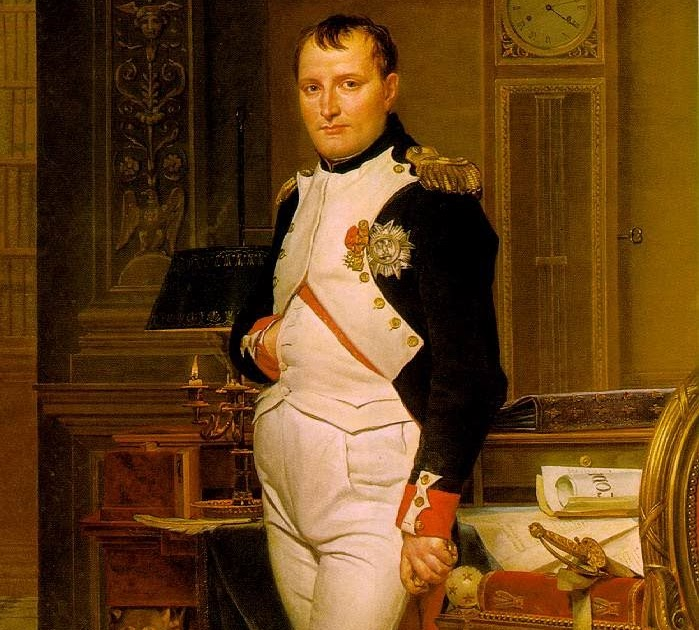
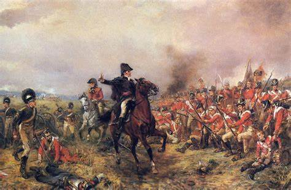

Napoplean Bonaparte was one of our Nation's greatest generals and a strong politcal leader of our revolution. He was born in Corsica and quickly rose to be the great emporer of our nation. Lets see his rise to power through his very own eyes.
I was once again blessed with the privallage to speak with our new emperor and gain insite into his rise to power
"I rose to power through my undefeatable skills as a general of the French Army. Between the years 1793 and 1799 I won countless battles against our adversaires across Europe. Because of this sucess I had enough courage to take a stand in the revolution. I aimed to bring stability to and support the revolution."
And now wise words from our emperor.
"If you want a thing done, do it yourself." -Napoleon Bonaparte (https://www.brainyquote.com/)
After our emperor had made the switch from general to political leader another constituion was drafted. Our leader saw this new constitution as an opertunity and used it to put himself in a seat of higher power. In the year 1800 Napoleon named himself the first Consul of France for life. In only another two years our emperor claimed his rightful title having the full support of the people each step of the way.
Now that Napoleon had full control over France our people began to see change once again.
The largest change our emperor made however is far from simply manipulating the government. Napoleon created us an entire new system of laws based upon the Enlightenment Ideals. (see page 2) This new set of laws allowed our people religous toleration, equality, and the annihilation of the Feudal system. However this new system came with a price. The rights women had fought for and nearly succeded in obtaining had nearly all been taken away; furthermore women did not have the opportunity to exercise citenship.
Our Emperor had a profound love for war and dominated most of Europe on the battlefield. Because of his efforts on the battlefield, France controlled most of Europe by force during the early 1800's. Our emperor had ambition to rule the entirety of Europe and began to invade Britain in 1803. He would see a near victory resulting in one of his few defeats on the feild of war. Later in the year 1812 we would see our emperor make an attempt on Russia by invading them aswell
After Napoleon Invaded Russia in the year 1812 he was quickly defeated by Russain forces. Our once powerful nation was brought to its knees. We had nothing left to fight wtih. Our army was annihilated. The Revolution, the war are over. Our great emperor can no longer grant France the strength it needs. All of Euruope saw their chance and banded together to defeat France now that we had our back against a wall. In the year 1814 Our emperor Napoleon Bonaparte advocated the throne of France thus ending our revolution.
Because of Napoleon at the head of France's revolution enlightenment ideal's spread across all of europe. Soon enough I belive revolutions will breakout across europe because of the spread of these new ideas.
Back to page 1 Back to page 2